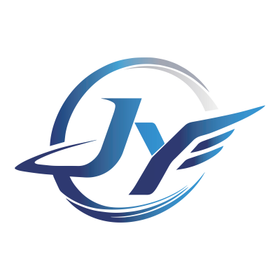
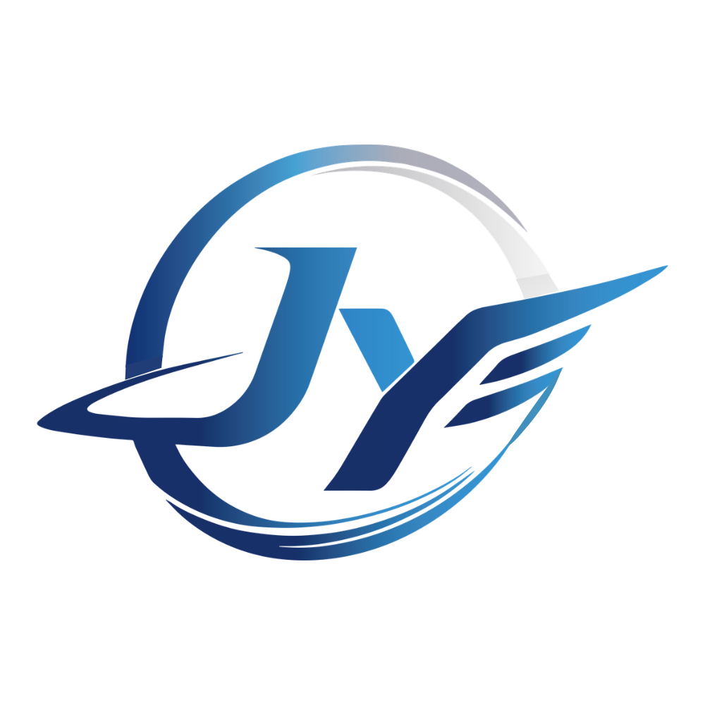

原件为 Logo 包内「微信图片_20260714152324_1_118.jpg」。右列沿用包内同形透明原稿，按左侧原图比例对齐，叠加三段可编辑的接笔。请品牌负责人逐处确认接笔的位置、粗细及渐变。
| 位置 | 修订前 | 拟修订后 |
|---|---|---|
| 全形 |  |  |
| 左侧圆弧与 J 横笔 收窄后接入横笔 | ||
| 右上银弧与翼面 沿外圆延至上翼中段，接笔宽度待定 | ||
| 右下翼与底部圆弧 沿圆周收拢，保留羽间留白 |
首页和工作台源码均为 46rpx。按 320／375／390 逻辑像素宽依次展示。
左为公众首页，右为加盟工作台。两处实际控件均为 23 × 23 逻辑像素。临时把待审图传入模拟器，标题可读，图形轮廓可辨，三处细笔在此尺寸难以分别辨认。注入图片加载错误后，两端均回退为“九”。